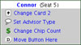

| Practice |
| Auto Deal |
Automatically deal the next hand at the end of the current hand, after a brief delay (specified
in the Time Delay section).
|
Pause
When
All-in |
If this option is ON, the action pauses when you and any remaining players are all-in. The type
of hand and odds of it winning is displayed. You must click the Continue button
(C key) to show the flop, turn and river cards. If this is OFF, the board cards
are displayed automatically.
See the Poker Table help topic, section 3, for more information on
what is displayed when this option is on.
|
| Pause During Color-up |
If this option is on, the action pauses when the Color-up Chip Race
occurs after the cards are dealt and after the chips are awarded to the high cards. You must
click the Continue button (or C key) to see the next step. If
this is off, the color-up happens automatically with a slight pause after each step.
|
| Jump To End After Fold |
Normally, after you fold you have to watch the other players finish out the hand
(just like in a real tournament). With this option ON, you automatically jump to the end
of the hand after you fold.
|
| Auto Save |
After you have saved a tournament (or resumed a saved tournament) and this option is ON, then
the tournament is automatically saved at the end of each hand. In other words, the Auto
Save option will continuously save your game once you saved your game the first
time by clicking the Save button and naming your game.
|
|
| "Cheat" Options |
Show Cheat Pop-ups
 |
Allows you to click on any player to bring up the cheat
pop-up menu. With the Cheat Pop-up Menu option ON
in practice mode, click on any player to bring up the Cheat
Pop-up Menu. By clicking on your opponents cards, you are
able to change either hole card, the player type, player name, chip
count, move the button to that position, or remove the player. By
clicking on your cards, you are able to change either hole card, your
advisor type, chip count, or move the button to your position. You
may also change any of the board cards by clicking on them. See Cheat
pop up menu under Poker Table for additional
information about the menu.
|
| Show Winning Hand |
In a typical game, if a player wins because all other players fold, he or she does
not have to show the winning hand. With this option ON, the winning hand is displayed face
up at the end of the hand.
|
| Show Folded Hands |
In a real game you typically never see a folded hand.
However, with this option ON, at the showdown you see your hand (if
folded) and the hands of opponents who called, bet or raised and ultimately
folded (you do not see hands of opponents who folded before the flop
without calling the big blind).
|
| Show Mucked Hands |
In a typical game, if a player has a losing hand and
acts after the winner during showdown, they do not have to show their
hand (they can "muck", or throw them away). With this option,
any mucked hands are displayed face up at the end of the hand. A mucked
hand is a hand that went to the showdown, and folded after the winning
hand was revealed before them. The muck is the pile of folded and
burned cards in front of the dealer. A player has the choice of not
revealing their losing cards, or "mucking" them at the showdown
if the player before them shows a winning hand they know beats theirs.
|
| Show All Community Cards |
Also called "Rabbit Hunting". In a typical
game, if a player wins because all other players fold, any remaining
community cards are not dealt. With this option ON, these cards
are displayed so the curious can see what those cards would have been
(not that it matters!). Note: This practice is known as
"rabbit hunting" and is typically prohibited in tournaments.
|
| Peek At Opponent's Cards |
In a real game you never know what your opponent is holding
- that is the crux of the game. However, with this option ON,
you can view your opponent's hand by passing the mouse over the opponent's
cards. We provide this as a way to learn from the computer players.
Use it wisely!
|
| Computer Cards Face Up |
If the "Peek" option isn't enough, you can
simply deal all the computer player's cards face up as well. Another
way to learn from the computer players.
|
| Pause After Cards Dealt |
If this option is ON, the action is paused after the
hold, flop, turn, and river cards are dealt. This is useful if you
want to change any of the cards before any players act. You can change
a players cards, chip count, player type and button position by right
clicking on the player you wish to change.
|
| Don't Move Dealer
Button |
If this option is ON, the dealer button will not be
moved between hands. This is useful if you want to place the dealer
button (using the pop-up menus) and play several hands in a row from
the same seat position.
|
| Never Go Broke |
If this option is ON, and you lose all of your chips,
you automatically get one half of the chips of the tournament leader.
This "transfer" occurs after the next deal is started (so
don't forget to click Deal after you bust out). Of course this never
happens in the real world, but it can make for some good fun - especially
if you go all-in every hand!
|
|
| Time Delay |
| Computer Player Pause |
Amount of time to delay between computer player actions
and after community cards are dealt, in 10ths of seconds. The range
of delay is 0 to 40 (0 to 4 seconds). Use this to control the pace
of the action.
|
| Auto Deal Pause After Hand |
When Auto Deal is on, amount of time to delay before the next hand starts after a
hand ends, in 10ths of seconds. The range of delay is 0 to 50 (0 to 5 seconds).
|
| Auto Deal Pause After Fold |
When Auto Deal is on, amount of time to delay before the next hand starts after you
fold, in 10ths of seconds. The range of delay is 0 to 50 (0 to 5 seconds).
|
| Hands per Hour |
The number of hands per hour controls how fast each time the small and big blinds
increase. Because all of the other players are computer controlled, a round of poker can
take less time than in a real game. Since the blinds are increased based on time, it is
important to base the time clock on the average time of a round of cards to simulate real
tournament play. For example, at 30 hands per hour, every 30 hands played equals an hour
of elapsed tournament time. Thus, if you are playing a tournament with 30 minute levels,
the level advances every 15 hands. Change this value to increase or decrease the number of
hands played per level. Range is 10-250.
|
|